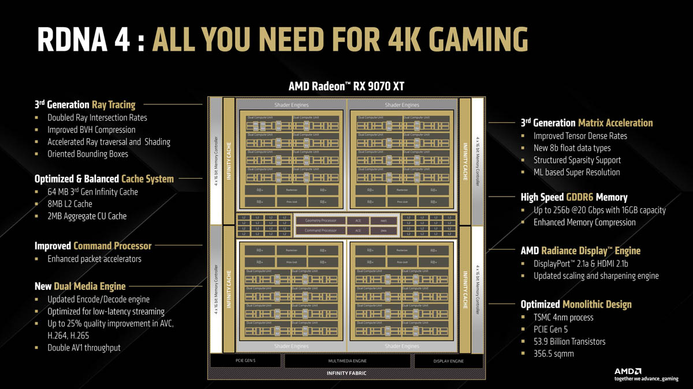
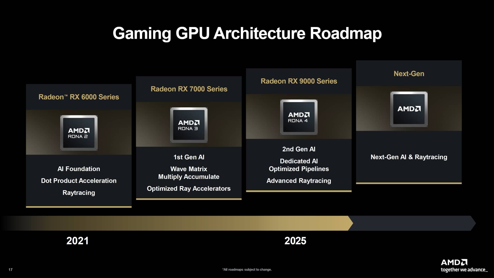

RDNA 4 Architecture
RDNA 4 — архитектура графических процессоров AMD четвёртого поколения, выполненная по 4-нм техпроцессу с монолитным (не chiplet) дизайном кристалла. Видеокарта RX 9070 XT, построенная на этой архитектуре, содержит 53.9 миллиарда транзисторов на кристалле площадью 356.5 мм². Архитектура получила блоки трассировки лучей третьего поколения, ИИ-ускорители третьего поколения (Matrix Acceleration) и переработанную систему кэша. По сравнению с RDNA 3, эти улучшения дают значительный прирост производительности в трассировке лучей и куда более мощную основу для технологий апскейлинга на основе ИИ.
Ключевые технические факты
- Трассировка лучей 3-го поколения с удвоенной скоростью пересечения лучей
- 64 МБ Infinity Cache 3-го поколения плюс 8 МБ L2-кэша
- ИИ-ускорители Matrix Acceleration 3-го поколения с апскейлингом на основе машинного обучения
- 16 ГБ памяти GDDR6 на 256-битной шине со скоростью до 20 Гбит/с
- Поддержка PCIe 5.0, выходы DisplayPort 2.1a и HDMI 2.1b

История поколений архитектуры
- 2019 — выход архитектуры RDNA (1-е поколение) ➞
- 2020 — выход RDNA 2 ➞
- 2022 — выход RDNA 3 ➞
- Январь 2025 — анонс RDNA 4 на выставке CES ➞
- 6 марта 2025 — выпуск видеокарт RX 9070 и RX 9070 XT

AMD заявляет, что архитектура построена «с нуля» и обеспечивает «значительный прирост производительности ИИ» в новых видеокартах.
A short overview of the RDNA 4 architecture on the RX 9070 XT in the video below.
Полные официальные характеристики смотри на сайте AMD.